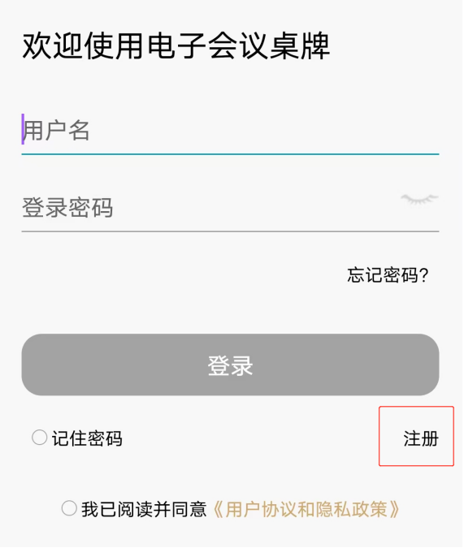
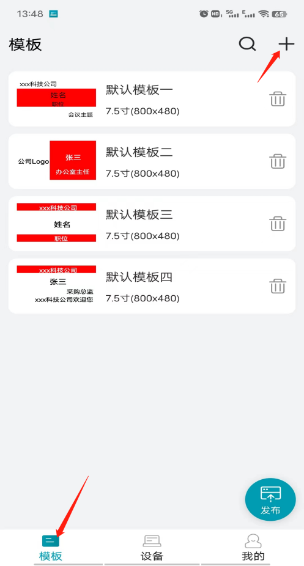
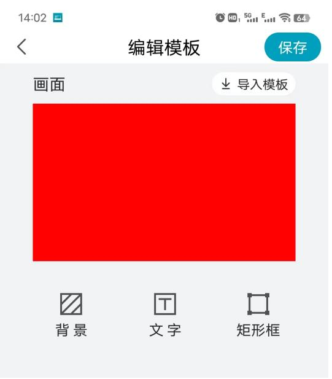
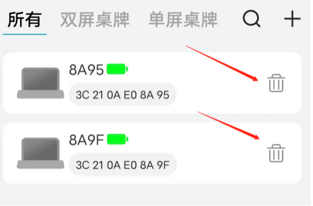
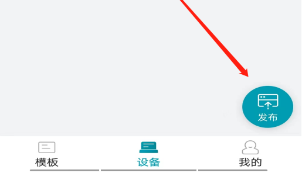
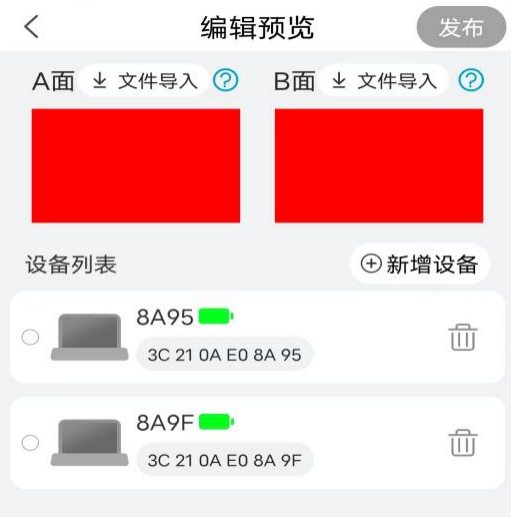
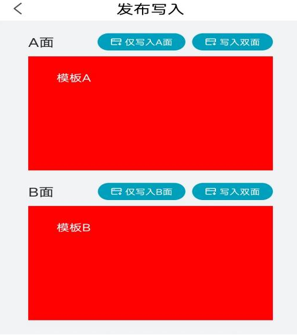
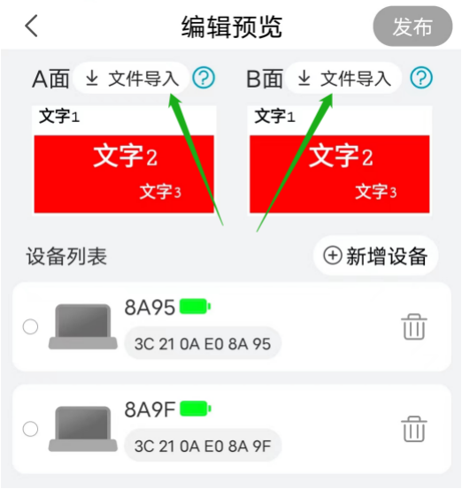
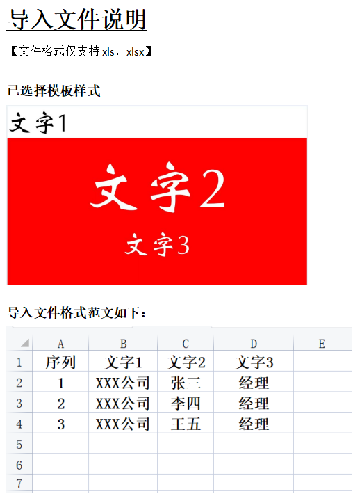

※ 模板制作和设备绑定顺序可对掉；<
※ 文件导入为批量刷新不相同文字内容的可选项；
1.初次登录时，需要按照提示进行用户注册。
2.注册成功用户下次登录时，可以直接输入用户名、密码进行登录。
注意：打开APP时需打开手机蓝牙和允许存储、拍照权限。

1.登录APP后，点击底部导航栏【模板】进入模板界面。
2.点击默认模板或已保存模板进入编辑，或点击右上方【“＋”】->>选择“7.5寸电子桌牌”->>点击【下一步】进入模板编辑界面，对模板进行修改或编辑。
3.模板编辑：
3.1插入背景
1). 点击【背景】->>选择红、黑、白为背景色；
2). 点击【图像选择】导入要作为背景的图片，可以根据实际需求调整背景图像大小（制作背景图片时建议设置成长宽点阵800×480）；
3). 点击左侧【<】或右上角【保存】退出背景编辑。
3.2文字编辑
1). 点击编辑模板界面中间【文字】，进入文字元素编辑；
2). 点击文字输入对话框，输入要编辑的文字，根据需要调整文字的大小、颜色、字体；设置好后点【确定】返回模板编辑，或点右上角【保存】保存模板；

3). 删除文字元素：点击【文字】进入文字元素编辑，选择要删除的文字元素选中，点击【取消】即删除改文字元素并返回到上一界面。
3.3矩形框
1). 点击编辑模板界面右下角【矩形框】，可插入矩形框和编辑，可调整框的宽度和高度，框背景色（红、黑、白），设置好后点【确定】返回模板编辑，或点右上角【保存】保存模板；
2). 插入图片：先插入矩形框后调整好框的大小，然后点击【图像选择】可插入图片；
3). 删除框：点击【矩形框】进入框编辑界面，点击模板中要删除的矩形框选中，然后点击【删除】。
3.4导入模板
1). 点击【导入模板】可导入APP已有的默认模板或前面自己编辑保存好的模板，然后进入修改。
3.5保存模板
1). 点击右上角【保存】可以对当前编辑好的模板进行保存，可另存为或替换当前模板进行保存，APP自带默认模板不能被替换。

1.登录APP后，点击底部导航栏【设备】进入设备界面。
2.点击右上方【＋】绑定桌牌：
2.1进入自动搜索附近的桌牌，选择点击搜索出的列表中的桌牌，弹出对话框命名后点【保存】对改桌牌绑定成功；
2.2或点击右上角【】扫描图标，扫描设备上的二维码进行绑定；
2.3如绑定时提示设备已经被绑定了，可通过弹出的绑定人的手机号联系解绑定；
3.解绑设备：
点击下方导航栏【设备】，已绑定的设备会在设备列表中，选择对应需要解绑定的设备，点击该设备最右侧的【】删除图标，即可解绑定该设备。

1.进入发布
1.1点击底部导航栏【模板】【模板】【我的】进入任意一界面，点击右下角【发布】悬浮图标->>选择单屏或双屏桌牌，进入发布【编辑预览】界面。

2.导入待发布模板
2.1点击A面或B面模板任意区域->>进入【编辑模板】界面->>点击【导入模板】导入已保存好的模板，或现编辑一个新的模板->>点右上方【保存】（可覆盖现有名称模板或新建名称保存），返回到【编辑预览】界面。
2.2如果是选择的双屏桌牌，这里A、B面模板都需要导入或编辑有模板，后面才能进入发布界面。
3.选择发布设备
3.1已绑定设备列表中选择要刷新的设备，或【新增设备】绑定其他设备；只有设备连接上，右上角的【发布】按键才会变亮可以发布。
3.2可以选择1台设备，也可选择多台设备进行发布模板刷新。

4.发布写入
4.1如选择【仅写入A面】，则只是将A模板中的内容将设备A面的信息刷新；
4.2如选择A面右侧【写入双面】，则将A模板中的内容都发布到设备的A、B面；
4.3如选择【仅写入B面】，则只是将B模板中的内容将设备B面的信息刷新；
4.4如选择B面右侧【写入双面】，则将B模板中的内容都发布到设备的A、B面；
如选择【分别写入AB面】，则将A、B模板中的内容分别设备A、B面的信息刷新。

本APP可以用同一个模板同时刷新多个桌牌，且每个桌牌上显示的文字信息可以不同，需事先制作导入文件配合使用。
1.制作专用模板
1.1按照前述模板制作方法制作专用模板，文字元素内容用代码表示，设置好格式；批量刷新只能改变文字元素，其它元素不会改变；文字元素不超过5个，多余的不会变化。
2.制作辅助文件
2.1制作excel表格，将要刷新到桌牌的内容写入到excel表格中。表格中第1行和第A列为辅助行列（不能空白），辅助行列里的内容不会被识别刷新到桌牌中，从第B2开始读取。
2.2表格内容最多为5列（即到F列），对应模板中的5个文字元素，第G列开始的内容不会识别到。
2.3表格内容最多为50行（即到51行），对应可以最多同时刷50个桌牌。

3.导入文件
3.1将制作好的excel辅助文件保存到手机；
3.2按照前述的“模板发布”流程，导入专用模板后，点击【文件导入】->>选择excel辅助文件，APP下方会读取出excel表中的内容；
3.3选择需要刷新到桌牌的内容，点确认退出；此时模板上的文字会转换为第一个选中的内容；
3.4从设备列表中选择要刷新的桌牌；选中的桌牌如果没有连接上，将会默认为没选中，内容按顺序刷新到下一个桌牌。
4.刷新桌牌
点击右上角【发布】，将进入到发布写入界面，按照前述的“模板发布”流程，点击相应的按键对桌牌进行刷新。
